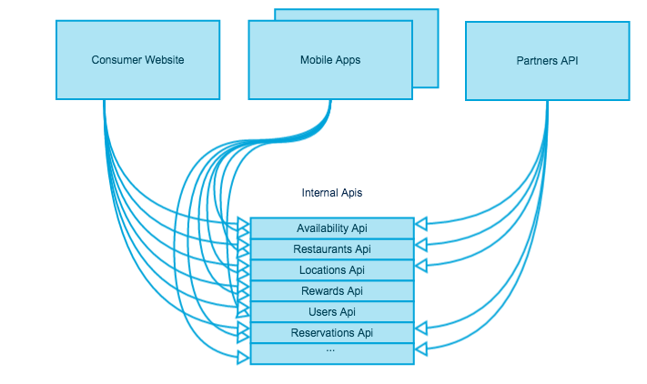
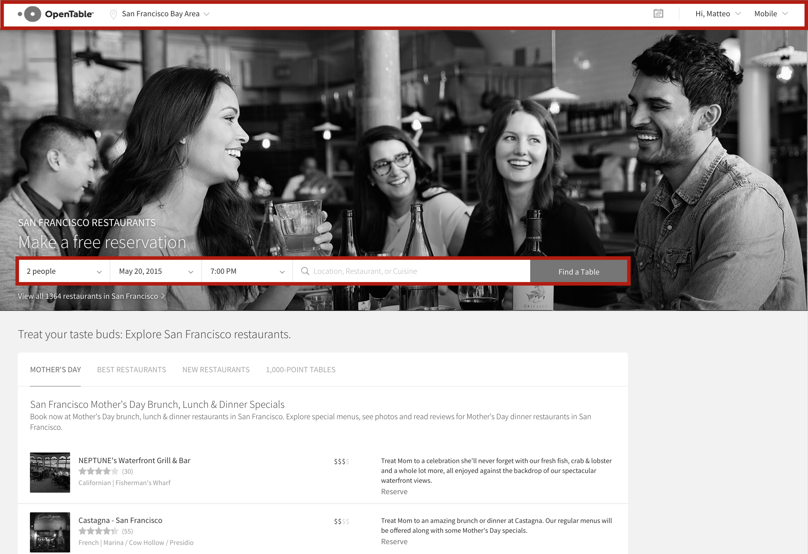
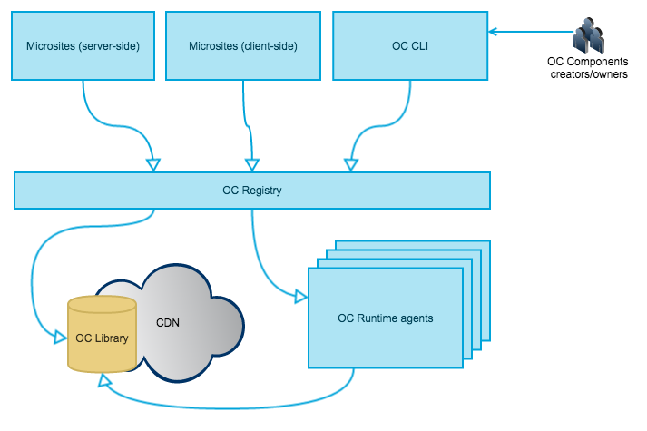

Who am I
Coding, technology, conferences
London, UK
OpenTable

Restaurant Reservations - Free • Instant • Confirmed
more than 32K restaurants worldwide
more than 16M reservations every month
more than 450K reviews per month
The monolith
Deployments every 15 days
Not very resilient
Not very robust
Code consistency (one single language)
Dedicated team for infrastructure
Dedicated team for testing
A couple of years later...
Microsites

Microsites
Quick deployments
More (focused and effective) testing
Robustness++
Diversity on tech stacks
Microsites: not a free ride!
Static resources duplication
Markup, javascript, css duplication
Inconsistencies
Every microsite including ~150K of javascript libraries
Every microsite including ~50K of css
The common parts

The common parts
Components for common UI elements
$ curl http://components/couk/header?userType=Admin&metroId=72
{
"html": "<div><img src=\"//components.opentable.com/logo.jpg\" />...</div>",
...
}
- REST interface
- HTML output
- Headers and parameters to get different variants
- Ability to handle server-side logic
- Ability to host static resources
Components for shared CSS/JS libraries
$ curl http://components/jp/css
{
"html": "<link src=\"//components.opentable.com/css-bundle-jp.css\" rel=\"stylesheet\" />",
...
}
$ curl http://components/com/js
{
"html": "<script src=\"//components.opentable.com/js-bundle-com.js\"></script>",
...
}
What about...
- Client-side rendering?
- IFrames?
- Asset compilation during build time?
- WebComponents?
Microsites + Shared components
Consistency
Coordination
Optimal front-end loading
Easy to spin-up new microsites
A new hard dependency for all the front-end!
Not possible to create or edit components!
Features
Enables people to create new components independently and publish them
Granular ownership
Performances
Robustness
Serve as framework for experimenting and A/B testing new ideas in the front-end
Consumers have control
How does it work
Demo time!

Getting started
$ npm install -g oc
$ mkdir demo && cd demo
$ oc init test-component jade
$ echo 'div this is my component' > test-component/template.jade
$ oc dev . 3030
$ oc preview http://localhost:3030/test-component
Ship it!
$ oc registry add http://oc-registry.herokuapp.com
$ oc publish /test-component
$ oc preview http://oc-registry.herokuapp.com/test-component
Static resources? Let me handle this!
// template.jade
img(src=staticPath+'img/img.jpg')
// server.js
module.exports.data = function(context, cb){
cb(null, {
staticPath: context.staticPath
});
};
Client-side rendering
<html>
<body>
...
<oc-component href="http://oc-registry.com/component/1.X.X/?a=b">
</oc-component>
...
<script src="http://oc-registry.com/oc-client/client.js">
</script>
</body>
</html>
Server-side rendering with node.js
npm install oc-client --save
var Client = require('oc-client'),
client = new Client();
client.config = {
registries: ['http://oc-registry.com/'],
components: {'hello-world': '~1.0.0'}
};
client.renderComponent('hello-world', function(err, componentHtml){
console.log(componentHtml); // => rendered html
});
Server-side rendered components
$ curl http://oc-registry.com/hello-world
{
"href": "https://oc-registry.com/hello-world",
"version": "1.0.0",
"requestVersion": "",
"html": "<div>hello John Doe</div>",
"type": "oc-component",
"renderMode": "rendered"
}Server-side pre-rendered components
$ curl http://oc-registry.com/hello-world
-H Accept:application/vnd.oc.prerendered+json
{
"href": "https://oc-registry.com/hello-world",
"version": "1.0.0",
"requestVersion": "",
"data": {
"name": "John doe"
},
"template": {
"src": "https://s3.amazonaws.com/your-s3-bucket/components/hello-world/1.0.0/template.js",
"type": "handlebars",
"key": "cad2a9671257d5033d2abfd739b1660993021d02"
},
"type": "oc-component",
"renderMode": "pre-rendered"
}Conclusions
SOA is not just about code
We need love when dealing with dependencies
Componentise all the web!